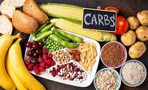
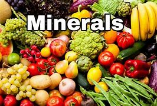

How does food help the body?
Minerals provide structure to your skeleton, maintain your cardiovascular health, help transmit nerve impulses and serve as a cofactor for enzymes throughout your body. Consuming a well-balanced diet with a variety of fruits and vegetables helps ensure you have plenty of these nutrients in your body.
classes of food
- Carbohydrates - These are energy-giving nutrients found in potatoes, rice, wheat, maize, and other starches.

- Proteins - These are bodybuilding nutrients found in meat, legumes and dairy products.
- Fats - These are found in nuts and fruits like avocados.
- Fiber - These are necessary for digestion and are found in fruits and vegetables.
- Minerals - These are necessary for improving bodily functions and are found in most foods, fruits, and vegetables

- Vitamins - These boost immunity and are found in fruits and vegetables.
- Water - This is used in the creation of bodily fluids and is found in fruits, juices, and other liquids.